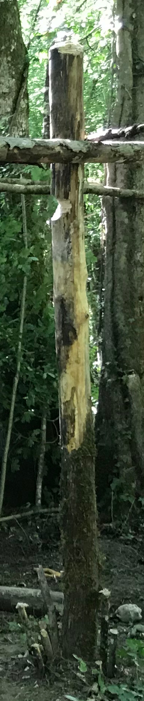
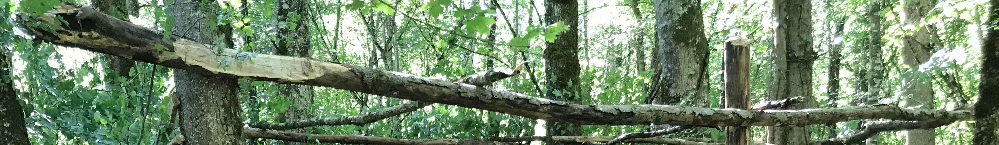

Bienvenue au CMG(JB)!
–Cliquez ici–
L'histoire de la (magnifique et géniale) cabane:
Cette (magnifique et géniale) cabane a commencé à être construite au milieu de juin 2020. La préparation du terrain a pris une journée (battre la terre, creuser les fondations, arracher le lierre couvre-sol etc...)Ensuite la préparation du bois pour les fondations a pris deux jours(aller chercher le bois à terre, couper les arbres tombés (jamais les arbres vivants, assurément), enlever les branches parasites et les épines de certains troncs raboter les endroits où les clous allaient être plantés etc...)
La partie la plus longue a été la réalisation de la structure de la cabane. Les plus difficiles à fixer étaient:
- Le poteau en bois, surtout le trou et le taillage de celui-ci.
 - Le clouage du presque-tronc latéral, qui pesait environ 50kg(il a fallu être quatre plus un échafaudage de fortune pour le porter)

Enfin, l'étape la plus longue, et la seule pour laquelle on adorerait de l'aide, le feuillage et les murs de la cabane. Tout simplement rajouter des branches FINES à rajouter sur le toit et les murs. Merci d'avance pour votre aide!
Le nom de la (magnifique et géniale) cabane
Les trois premières lettres "CMG" viennent des noms des "pères fondateurs", effectivement, leurs noms sont anonymement anonymés puisque garder son identité secrète sur internet c'est important... Les lettres '(JB)' sont arrivées là au forcing : Le frère de 'C' a cru bon (et il s'avère que celui-ci a eu raison...) d'écrire au marqueur indélébile ses initiales sur le panneau de bienvenue de la (magnifique et géniale) cabane. Ce marqueur indélébile n'étant pas effaçable, nous avons dû les mettre entre des parenthèses qui ont pour but de "montrer qu'on avait oublié de mettre ces initiales, pas pour dire que ce n'était pas important (bien sûr)" C'était la passionnante et mouvementée histoire du nom de la cabane.Quelques Règles à Respecter:
1
Ne rien détruire, maltraiter:Cela inclu: s'accrocher au poutres et aux fondations de la cabane, couper l'écorce des arbres, tuer des gens, arracher les panneaux, déclouer des clous, voler des objets, recouvrir de terre les endroits fréquentés comme la table de pique nique, les chemins etc...
2
Ne laisser aucune trace que vous ne voudriez pas rencontrer en arrivant:Y font partie: Laisser des déchets, même des gobelets en cartons ou des couverts en bois; ne pas laisser vos affaires (ça c'est plus pour votre intérêt) ne pas laisser de chaussures (si! on en a déjà trouvé) et plein d'autres choses mais vous avez déjà compris...
3
Feu de camp:Si vous voulez faire un feu, prenez seulement des branches mortes de la forêt et pas des branches de la cabane, ne faite le feu que dans le rond de pierres prévu a cet effet. Et puisqu'un idiot averti en vaut 0,5; ne faites pas de feu dans la cabane.
Numéro complémentaire:
Si vous changez des choses, des emplacements, etc... dans ou autour de la cabane, prenez le temps de rétablir le tout avant de repartir
Une image de la (magnifique et géniale) rivière à coté de la (magnifique et géniale) cabane
Le site web
Ce site web est sorti entre le milieu et la fin de décembre, à cause du confinement, le CMG (oui je ne mets pas (JB)) ne pourras pas se développer, avec moins d'une heure par jour on ne peut pas vraiment avancer, c'est pourquoi je développe ce site. J'espère que vous le trouvez bien et que si vous n'êtes pas encore allé voir la cabane, vous y irez bientôt! Pour le futur, je pense que je ferais un petit système d'upload de photos pour que tout le monde partage son expérience.Merci d'avoir lu ces lignes et à bientôt!
Mon Github
(il y a des photos en dessous)

Photos